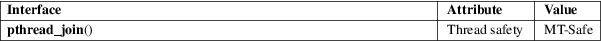

pthread_join − join with a terminated thread
POSIX threads library (libpthread, −lpthread)
#include <pthread.h>
int pthread_join(pthread_t thread, void **retval);
The pthread_join() function waits for the thread specified by thread to terminate. If that thread has already terminated, then pthread_join() returns immediately. The thread specified by thread must be joinable.
If retval is not NULL, then pthread_join() copies the exit status of the target thread (i.e., the value that the target thread supplied to pthread_exit(3)) into the location pointed to by retval. If the target thread was canceled, then PTHREAD_CANCELED is placed in the location pointed to by retval.
If multiple threads simultaneously try to join with the same thread, the results are undefined. If the thread calling pthread_join() is canceled, then the target thread will remain joinable (i.e., it will not be detached).
On success, pthread_join() returns 0; on error, it returns an error number.
EDEADLK
A deadlock was detected (e.g., two threads tried to join with each other); or thread specifies the calling thread.
|
EINVAL |
thread is not a joinable thread. | ||
|
EINVAL |
Another thread is already waiting to join with this thread. | ||
|
ESRCH |
No thread with the ID thread could be found. |
For an explanation of the terms used in this section, see attributes(7).

POSIX.1-2008.
POSIX.1-2001.
After a successful call to pthread_join(), the caller is guaranteed that the target thread has terminated. The caller may then choose to do any clean-up that is required after termination of the thread (e.g., freeing memory or other resources that were allocated to the target thread).
Joining with a thread that has previously been joined results in undefined behavior.
Failure to join with a thread that is joinable (i.e., one that is not detached), produces a "zombie thread". Avoid doing this, since each zombie thread consumes some system resources, and when enough zombie threads have accumulated, it will no longer be possible to create new threads (or processes).
There is no pthreads analog of waitpid(−1, &status, 0), that is, "join with any terminated thread". If you believe you need this functionality, you probably need to rethink your application design.
All of the threads in a process are peers: any thread can join with any other thread in the process.
See pthread_create(3).
pthread_cancel(3), pthread_create(3), pthread_detach(3), pthread_exit(3), pthread_tryjoin_np(3), pthreads(7)